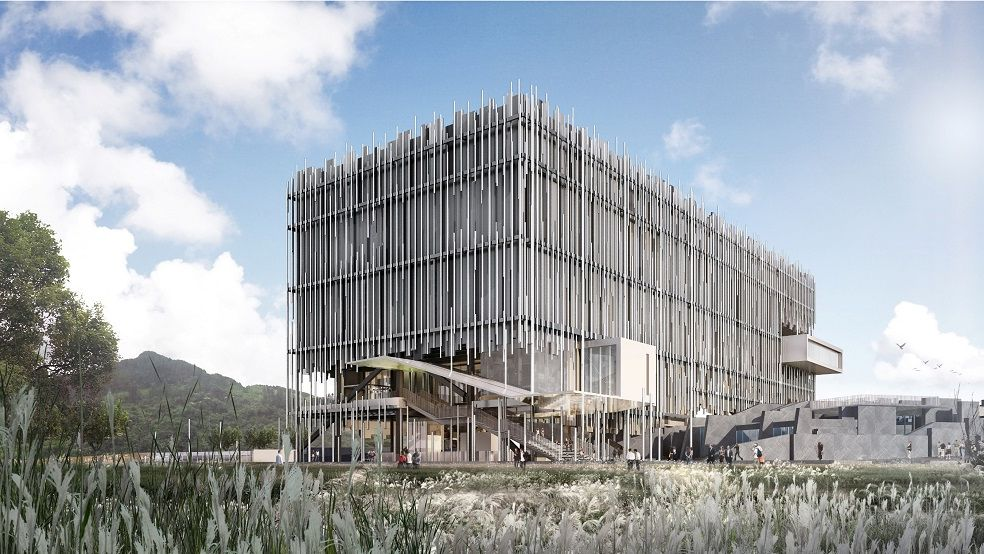

新北市美術館
新北市美術館坐落新北市鶯歌區鶯歌溪與大漢溪匯流的三鶯新生地，是新北市政府以文化推動地方發展與城市再造的重要建設，期望能結合新北市相關藝術文化、自然生態與地方產業特色，成為北台灣重要的藝文地標。 作為一座「全民美術館」，新北市美術館關注全市藝文發展，致力串聯藝術與生活，實踐美術館作為全民學習及社會連結的重要使命。新北市美術館立基在地，連結國際，聚焦20世紀以來現、當代藝術與視覺文化，進行典藏、研究、展演、教育及公眾服務，建構以新北為核心輻射擴散的藝文網絡，積極與國際機構結盟，落實藝術的實踐與交流。

- 火車
【臺鐵鶯歌站】:「文化路」出口至對向「捷運通廊」，直行6分鐘可達。
- 捷運+公車
- 板南線捷運板橋站：轉乘公車【702線】，至【陶瓷博物館】下車，沿館前路步行8分鐘即逹。
- 板南線捷運永寧站：轉乘公車【917線】，至【新北市美術館】下車即達。
- 公車
- 由桃園、三峽方向前來：
- 【5005 線】桃園-鶯歌(經尖山)
- 【5101 線】大溪- 鶯歌
- 【981 線】北大社區-鶯歌
- 【幸福巴士F652延伸線】鶯歌區公所-鶯歌區公所
- 由臺北、板橋、樹林、土城方向前來：
- 【702 線】三峽-板橋
- 【851 線】北大社區-鶯歌高職
- 【917 線】鶯歌-土城
- 【939副線】鶯歌-台北市政府 (例假日停駛)
- 鶯歌區內公車：
- 【731 陶藝山水環狀線】 鶯歌市區觀光巴士，途經新北市美術館、鶯歌陶瓷博物館、鶯歌陶瓷老街、鶯歌三號公園、同慶里活動中心、鶯歌國中、南鶯集會所(建國市場)、鶯歌火車站、北鶯社區(鶯歌石)等站。
- 【F653線】鶯歌火車站(國際新城線)
- 【F656線】鶯歌火車站(鳳吉理想線)
- 由桃園、三峽方向前來：
- 自行開車
- 國道2號 ：
八德鶯歌(18 大湳)交流道出口往鶯歌方向，順行經鶯桃路、中山路右轉國慶街、文化路左轉 館前路。
- 國道3號 ：
三峽鶯歌(50A 鶯歌)交流道出口往鶯歌方向，經三鶯大橋後右轉館前路。
- 國道2號 ：